主な祭神
彦屋主田心命
ひこやぬしたごころのみこと
当社本来の御祭神の一柱と伝えらる。 田を守り里を治むる祖神として奉斎せらる。
三重國伊賀郡 式内社
Tamori Jinja Shrine
千年余の時を伊賀の郷に鎮まり、
古山の里と人の暮らしを守りまもる氏神様。
写真：当社の神輿（黒漆塗）
History
田守神社は三重県伊賀市蔵縄手に鎮座する古社にして、 『延喜式神名帳』伊賀國伊賀郡に載る式内社、旧社格は村社、 神紋は三つ巴。創祀の年代は詳らかならず、 一説には豪族伊賀氏族が其の祖神と当地の産土神を合祀奉斎したるに始まると伝えらる。
長和三年（西暦一〇一四年）に住吉神を勧請して「吉田社」と称し、 長元年中（一〇二八〜一〇三七年）には現在地へ遷座せられた。 当時、現在地に鎮座せる吉田社の境内社として田守神社が祀られておりしが、 明治四十一年の神社合祀の折、本社吉田社の御祭神を境内社田守神社へ合祀し、 併せて村内七社の御神霊をも合祀奉斎して、 以後あらためて「田守神社」と称し奉ることとなった。
本来の御祭神に関しては、彦屋主田心命・別雷神・木花咲耶媛命の三説が伝わり、 昭和二十七年の神社明細帳には別雷神を主祭神と記しているが、 現在は此の三柱の神々と、明治期に合祀された諸神を併せ祀っている。
Enshrined Deities
彦屋主田心命
ひこやぬしたごころのみこと
当社本来の御祭神の一柱と伝えらる。 田を守り里を治むる祖神として奉斎せらる。
別雷神
わけいかづちのかみ
雷を司り雨をもたらす神。 昭和二十七年神社明細帳には主祭神と記され、 五穀豊穣・厄除開運の御神徳をもって崇敬せらる。
木花咲耶媛命
このはなさくやひめのみこと
富士の神山に鎮まる絶世の麗神にして、 安産・子授け・縁結び・家内安全を司り給う。
明治四十一年の合祀により、村内七社の御神霊を併せ祀り奉る。
Gallery
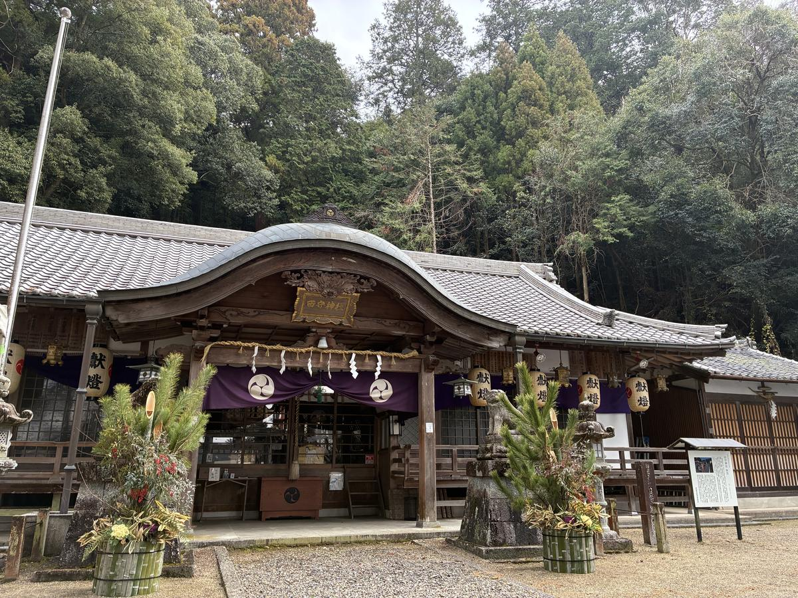
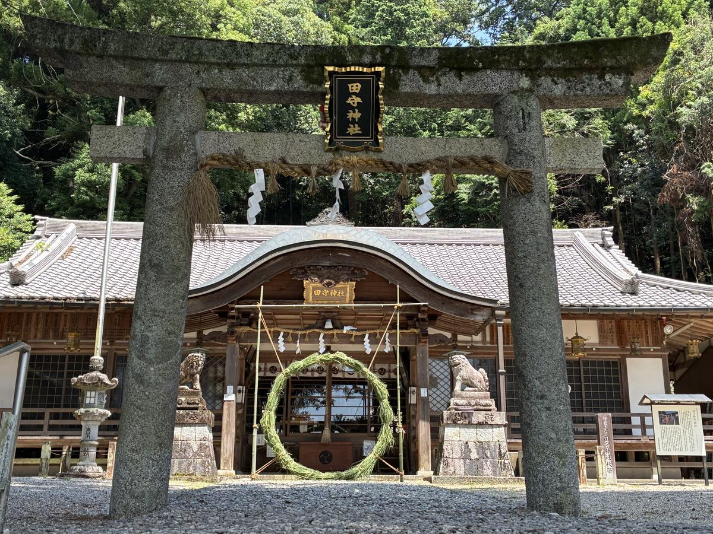
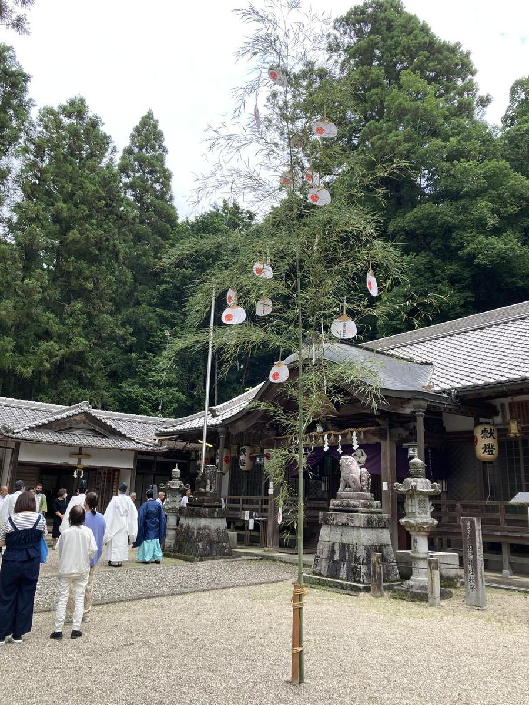
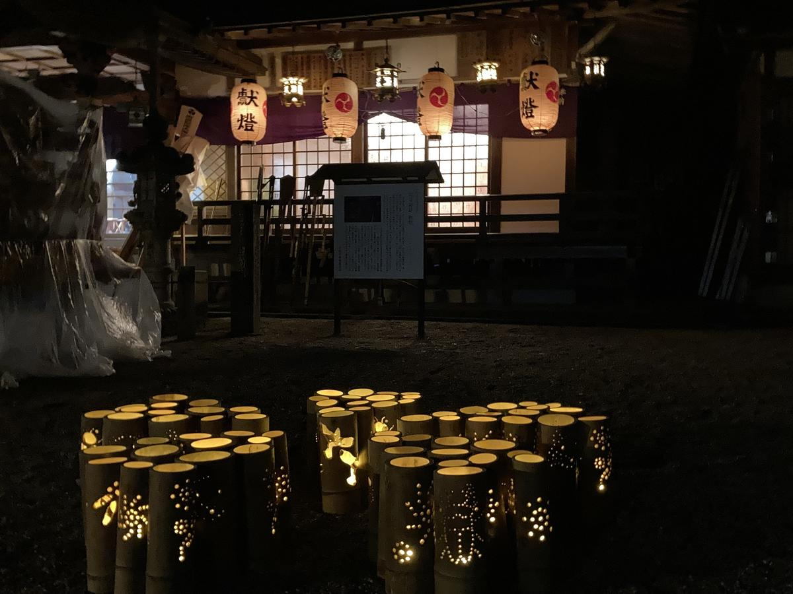
Festival Treasures
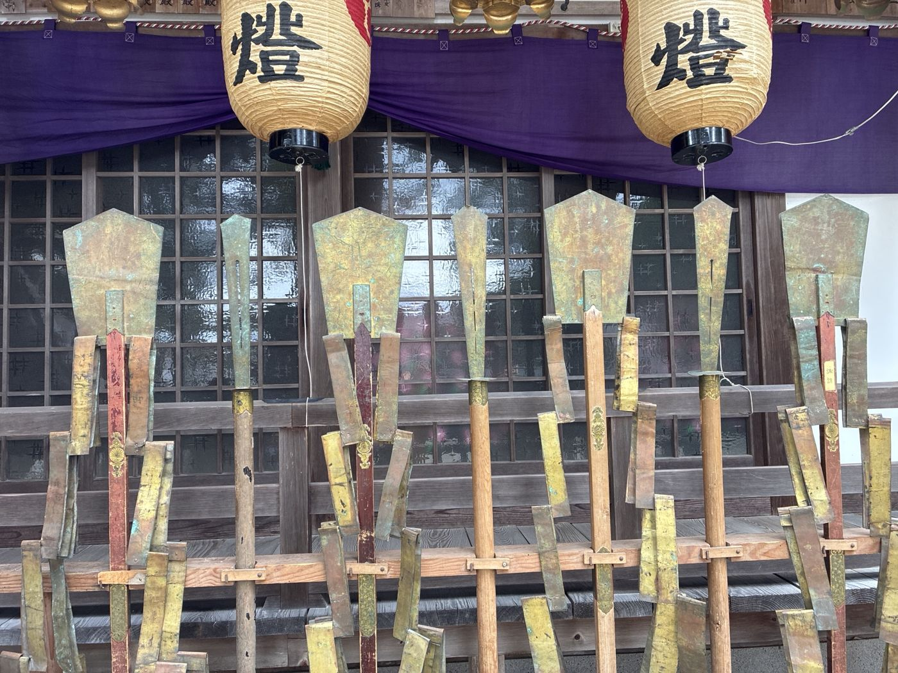
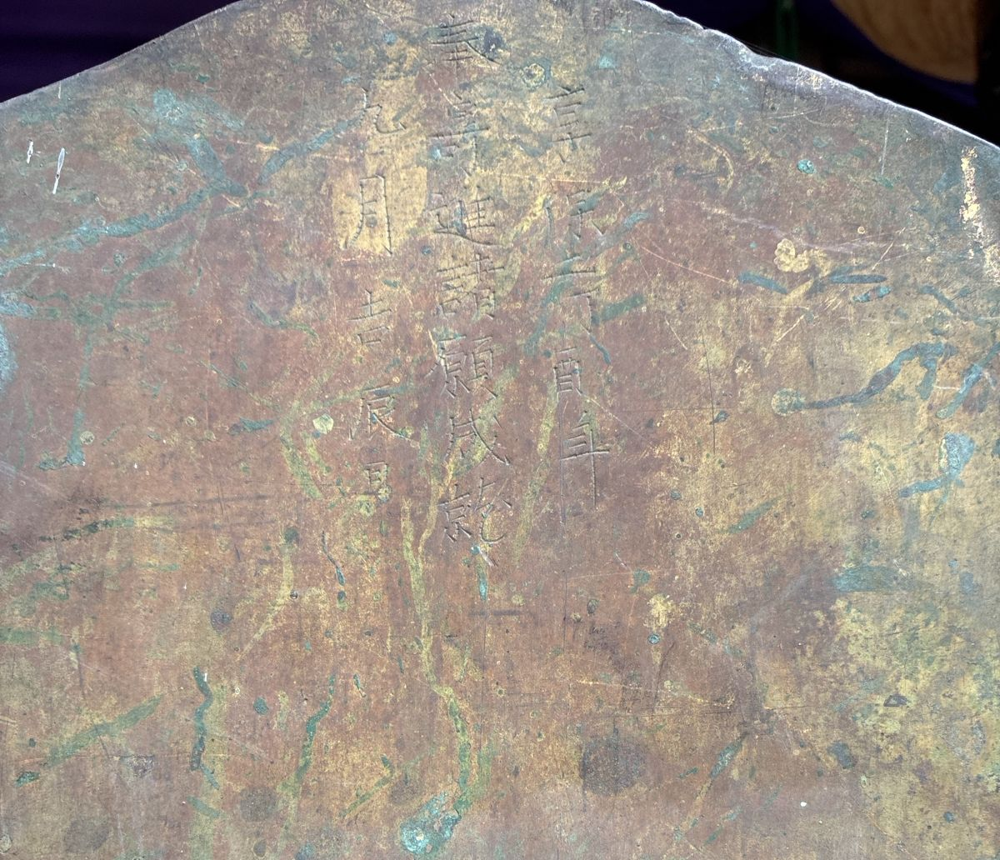
当社の祭礼に用いらるる盾と鉾。 金属の板を打ち延べて形を成し、柄には朱塗りに菊紋の飾り金具を施す。 盾の表には奉納の年月が鏨にて刻まれ、 三百年の歳月を経た今もなお、祭礼の度に社頭に立てられている。
銘
享保十乙巳年
奉寄進 諸願成就
九月吉辰日
※摩耗により一部の文字は判読による推定です。
作り手の手業と、これを代々守り伝えてきた氏子の方々の営みにより、 江戸中期の奉納品が今も現役で祭礼を彩っております。
秋の例大祭をはじめ、当社の祭礼では次の神輿・祭具が用いられております。
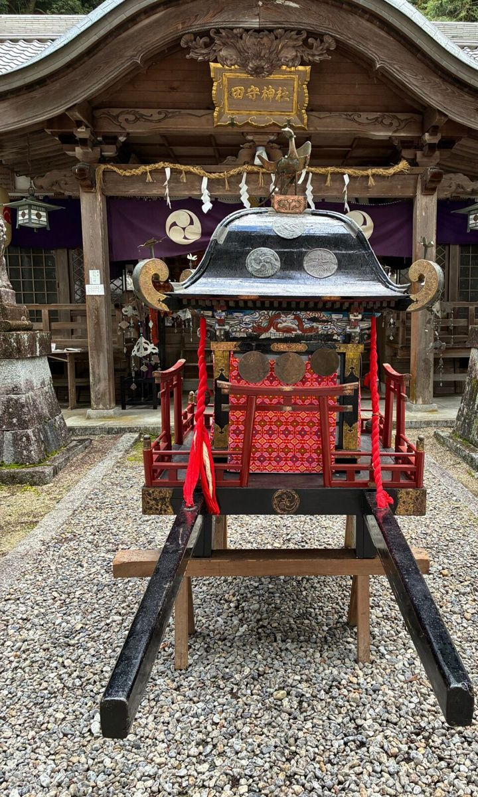
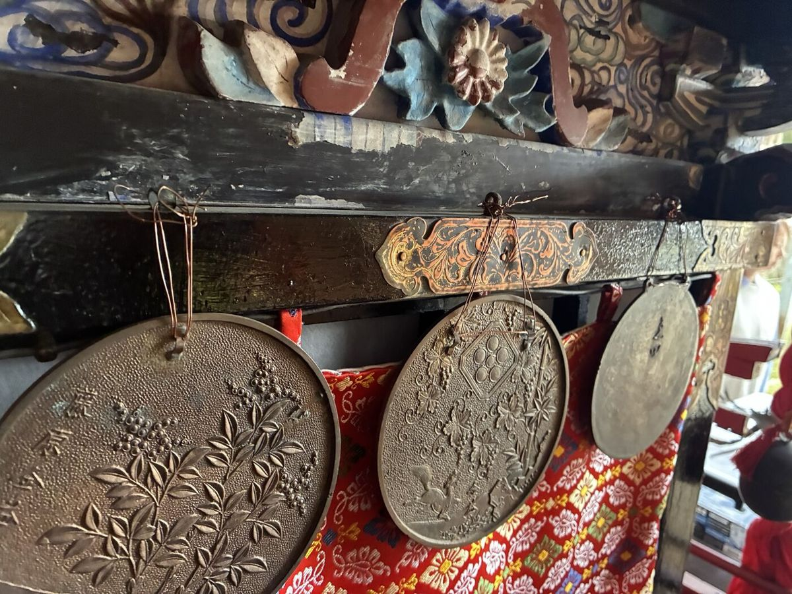
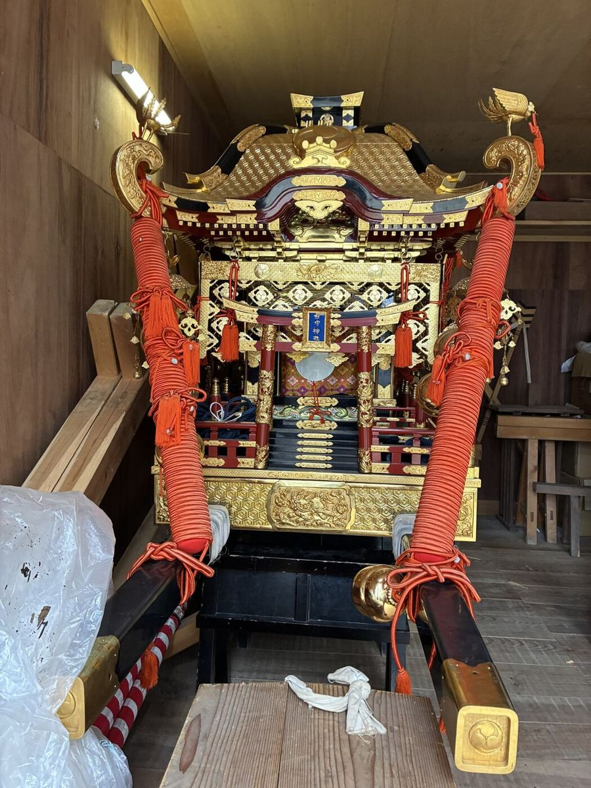
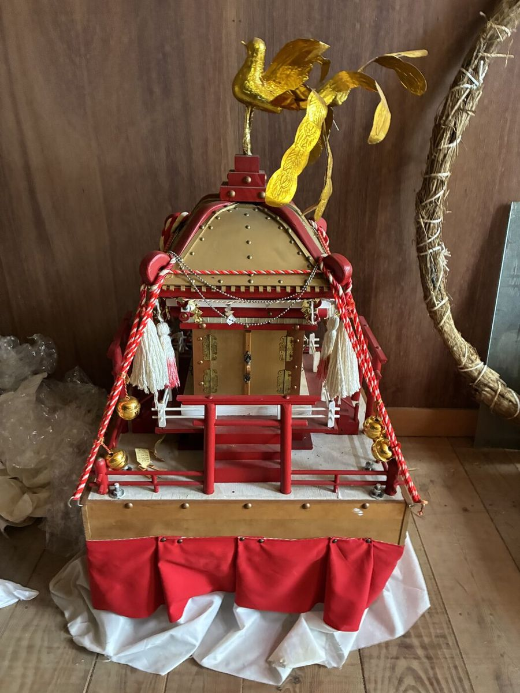
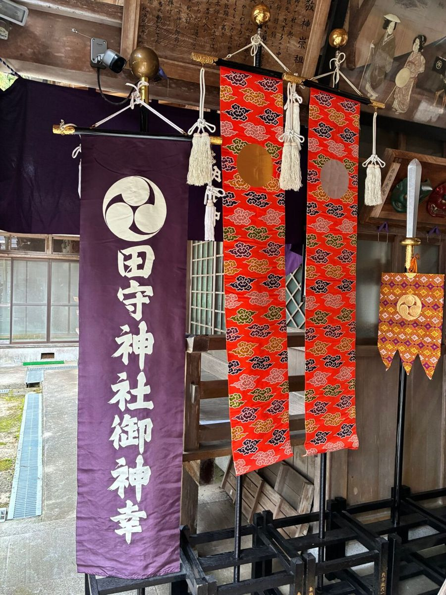
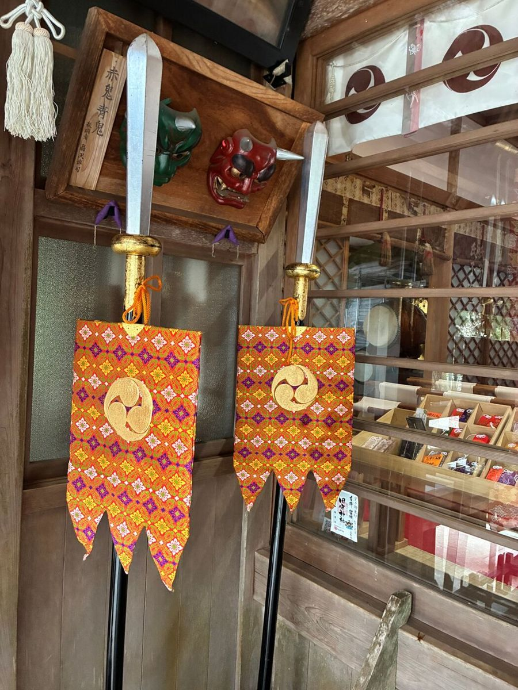
Annual Events
新年の始まりに、国家国民の安泰と氏子崇敬者の繁栄を祈念いたします。
年の初めに五穀豊穣と国家安泰を祈念いたします。
半年間の罪穢を祓い清め、残る半年の無病息災を祈念いたします。
田守神社の最も大切な祭祀。江戸時代より連綿と伝わる祭礼の様式が保存されており、 昔ながらの装束・神事・行列が今に伝えらる、伊賀市指定無形民俗文化財に列せらる秋祭である。 氏子総出にて神輿を奉舁し、五穀豊穣と里の安寧を神々に奉謝す。
新穀の実りに感謝を捧げ、神々の御神徳を奉謝いたします。
一年の罪穢を祓い、清らかな心で新年を迎える神事です。
Services
厄除開運・家内安全・商売繁盛・安産祈願・交通安全など、
各種御祈祷を承っております。
ご希望の方は下記メールアドレスよりお問い合わせください。
sucabiosamachii@gmail.com
田守神社の御朱印をご用意しております。
参拝の記念に、また御神縁の証としてお受けくださいませ。
御祈祷・御朱印のお支払いはPayPayにも対応しております。
現金・PayPayのどちらでもお支払いいただけます。
その他のお問い合わせは sucabiosamachii@gmail.com までメールにてお気軽にどうぞ。
Access
三重県伊賀市蔵縄手353